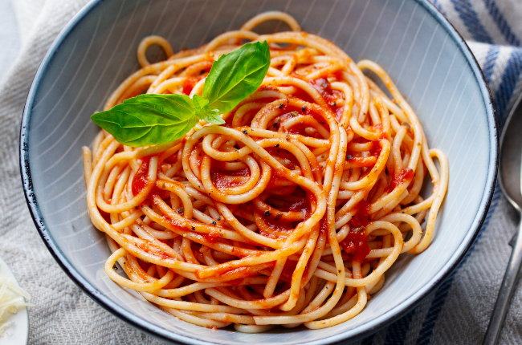

MACARRÃO SIMPLES
Ingredientes:
- 500g de macarrão de sua preferencia
- 1 colher de sal
- 1 colher de sopa de óleo
- 2 litros de água
- 1 tomate picado e sem sementes
- 1/2 pimentão picado
- 4 ovos
- 6 dentes de alho amassados
- 1 cebola picada
- extrato de tomate opcional
MODO DE PREPARO
- Coloque a água para ferver
- Quando estiver fervendo, coloque o sal e 1 colher de óleo.
- Quando o macarrão estiver mole, tire do fogo e escorra a água no escorredor de macarrão.
- Lave o macarrão.
- Faça o molho de sua preferência em outra panela.
- Coloque a margarina, o tomate, a cebola e o pimentão em uma panela
- Refogue e coloque uma colherzinha de sal.
- Junte o macarrão.
- Se quiser, pode colocar o extrato de tomate.
- Misture e sirva com queijo ralado.
MOLHO
NHOQUE DE BATATA

Ingredientes:
- 6 batatas médias
- 1 xícara de farinha de trigo
- sal a gosto
- 1 lata de molho de tomate
- 1 colher (sopa) de azeite
- 1/2 kg de carne moída
- 1/2 cebola
- 2 tabletes de caldo de carne
- 1 pacote de queijo ralado
MODO DE PREPARO
- Cozinhe as batatas, em água, até que estejam macias.
- Descasque-as e passe pelo espremedor ainda quentes.
- Vá acrescentando a farinha aos poucos e o sal, amasse bem.
- Coloque a massa sobre uma mesa enfarinhada e faça rolinhos.
- Corte cada rolinho em pedaços de mais ou menos 2 cm.
- Leve ao fogo, em uma panela com bastante água temperada com sal.
- Quando a água levantar fervura, vá colocando os nhoques, até eles começarem a subir.
- Coloque água fria em uma bacia com um escorredor dentro, retire os nhoques já cozidos e coloque-os no escorredor para dar choque térmico.
- Repita o processo até toda massa estar cozida.
- Escorra bem e coloque o nhoque em um refratário, reserve.
- Pique a cebola, bem miudinha e, em uma panela, frite com azeite.
- Acrescente a carne e os tabletes de caldo de carne.
- Mexa bem, quando a carne já estiver cozida, acrescente o molho e deixe cozinhar por mais 4 min.
- Despeje-o sobre o nhoque, salpique queijo em cima e leve ao forno para gratinar, sirva quente e bom apetite!